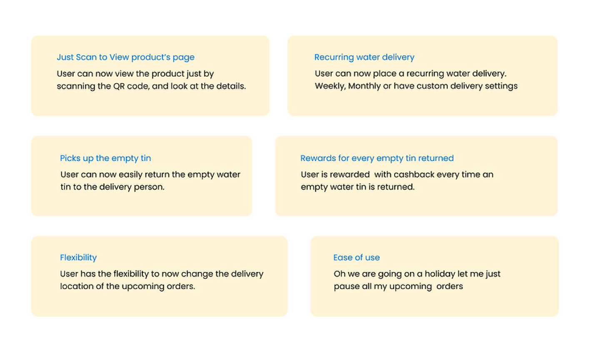
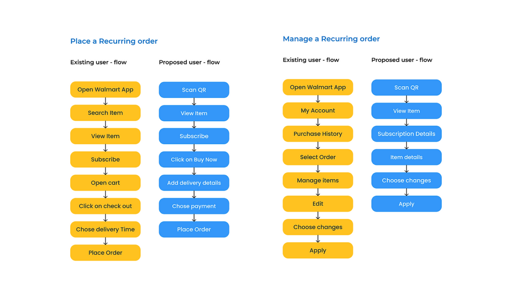
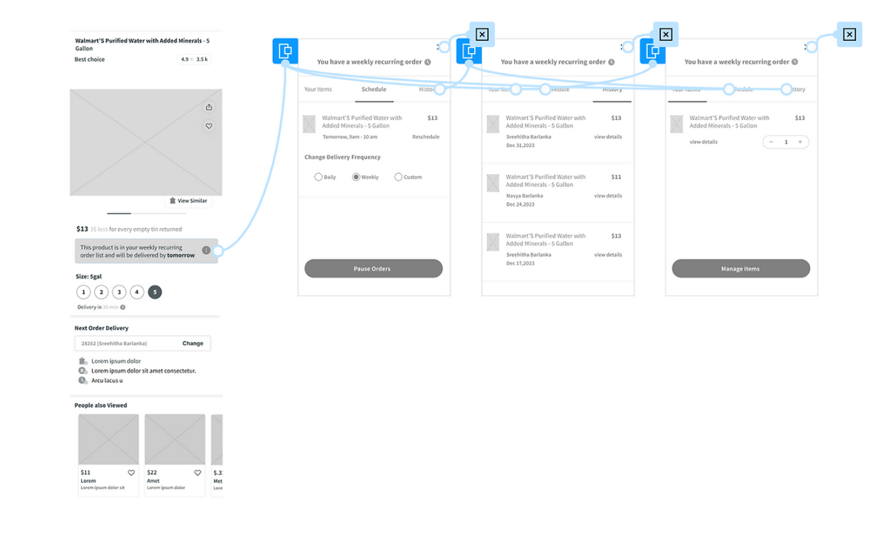
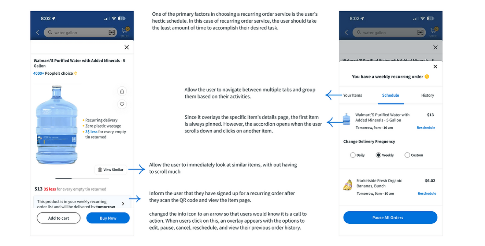

In the United States, clean drinking water is essential, yet many struggle with the inefficiencies of existing water delivery services. Imagine this: It’s summer and 92F outside, and you reach for your water container - but its empty. Frustrated right, you remember how slow and complex it can be to order a refill. What if this process was as simple as scanning a QR code?
The Challenge
For millions of Americans, ordering water is not quick as it should be. Services lack convenience, and delays often make it harder for families and individuals to access clean drinking water. Bottled water is one of the largest markets in the U.S., with over 15.9 billion gallons sold annually in 2022. Yet, despite these high volumes, the user experience for water delivery is far from ideal
The Solution
Enter a revolutionary approach: A water app that works seamlessly with QR code labels on water containers. The idea is simple--

This concept addressed a key frustration: When you’re out of water, the last thing you need is more delay. The instant QR activation eliminates waiting time and streamlines the process, ensuring that clean water is just a few taps away.
The Research Journey
I dove deep into understanding water delivery challenges. Through informal surveys and interviews, I discovered a key insight: Most users reluctant to download new apps for every service. They want quick, simple interactions. This led us to focus on QR code technology -- a solution that users could activate without the need to install anything new.
User Personas


What Makes This Different?
Why is this approach better? For starter, it eliminates the usual hassle. With just a scan, user can:
By focusing on the user’s journey—from scanning a QR code to receiving water within 30 minutes—we’re making the process as effortless as possible.
A Look at Walmart’s Current System
During my usability study, I reached out to Walmart Plus subscribers who had never used the auto-pay feature. What I discovered were three key pain points that hindered the user experience.
1. Search & Filter Confusion
When users searched for a gallon of water on auto-delivery, they often saw a list of products that seemed eligible. However, when they clicked to subscribe, they were met with a frustrating message: "This item cannot be shipped to this address." Most participants stopped scrolling at this point, unsure of why the option was disabled. later realized that the product was available for regular delivery but not for auto-pay because it was out of stock for their location. This inconsistency led many to quit.
Solution: Update the filter to show only products that are truly available for auto-delivery, reducing confusion and frustration.
2. lack of Clarity in Subscription Status
After users opted for auto-delivery, they would check back on the same product page only to see the option to subscribe still visible. This left them confused, as they couldn’t tell whether they had successfully enrolled in the service or not.
Solution: Update the subscription button to clearly indicate when a user is already subscribed, and disable further subscription prompts for that item.
3. Difficulty Managing Recurring Orders
One participant shared their account with three people, leading to a cluttered purchase history. Scrolling through a long list to find and manage recurring orders was tedious and time-consuming.
Solution: Create a dedicated section for managing recurring orders, or allow users to modify upcoming subscriptions directly from the item page.
Medium Fidelity Wireframes
During my usability study, I reached out to Walmart Plus subscribers who had never used the auto-pay feature. What I discovered were three key pain points that hindered the user experience.
Usability Testing Insights
During our think-aloud sessions with users, they shared key insights:
- The pause button was a lifesaver, but users wondered if it would pause all their orders or just one.
- Many appreciated the flexibility to change delivery locations, as they often shifted between homes.
- Overall, users felt empowered by the ease of managing their water delivery, but they also wanted more clarity on pausing multiple orders at once.
Final Design
Lesson Learned
A key challenge I faced was users’ confusion over the disabled auto-pay button for items that seemed available, causing high abandonment. After usability testing, I discovered a mismatch between search results and product availability. The solution was to update the filter to show only eligible items for auto delivery, simplifying the process.
From this, I learned even small interface issues can significantly impact user satisfaction. Clear communication and understanding user behavior are critical to designing a smoother, more intuitive experience.